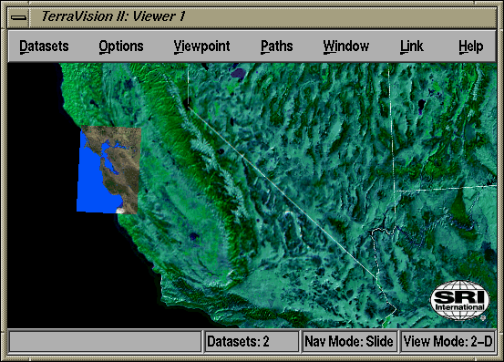

Once you have opened a 2-D viewer, you can actually switch it to a 3-D viewer (and vice-versa) by simply checking the "2D Navigation" option in the "Options/Naviation Settings" menu. Or, you can use the following keyboard shortcuts:
You can easily tell whether you are in 3-D view mode or 2-D constrained mode by looking at the last field in the status bar at the bottom of the window. For example, in the above screen shot you can see that it says "View Mode: 2-D".
Tip: If you in 3-D mode, high above the earth and looking down, and want to quickly snap your view so that it is aligned with the lat/long graticule (i.e. reset roll to 0), then you can switch to 2-D mode and then back to 3-D mode, i.e. press '2' then '3'.